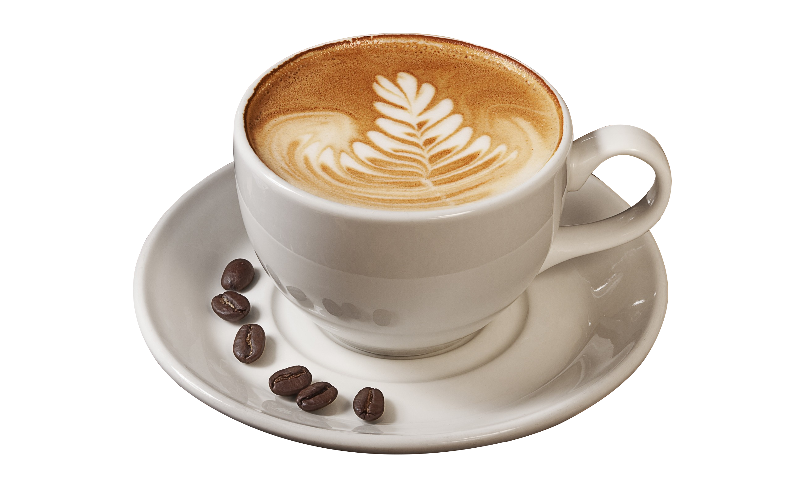

| Coffee is a drink prepared from roasted coffee beans. Darkly colored, bitter, and slightly acidic,
coffee has a stimulating effect on humans, primarily due to its caffeine content. It is the most
popular hot drink in the world.[3] Seeds of the Coffea plant's fruits are separated to produce
unroasted green coffee beans. The beans are roasted and then ground into fine particles that
are typically steeped in hot water before being filtered out, producing a cup of coffee. It is usually served hot, although chilled or
iced coffee is common. Coffee can be prepared and presented in a variety of ways (e.g., espresso, French press, caffè latte,
or already-brewed canned coffee). Sugar, sugar substitutes, milk, and cream are often used to mask the
bitter taste or enhance the flavor. Though coffee is now a global commodity, it has a long history tied closely to food traditions around the Red Sea. The earliest credible evidence of coffee drinking in the form of the modern beverage appears in modern-day Yemen from the mid-15th century in Sufi shrines, where coffee seeds were first roasted and brewed in a manner similar to current methods. The Yemenis procured the coffee beans from the Ethiopian Highlands via coastal Somali intermediaries and began cultivation. By the 16th century, the drink had reached the rest of the Middle East and North Africa, later spreading to Europe. In the 20th century, coffee became a global commodity, creating different coffee cultures around the world. |
 |